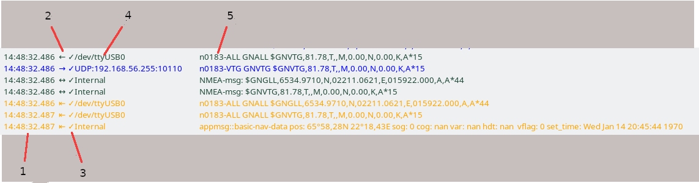

Debugging messages - Data Monitor
From 5.12 the internal messaging could be debugged using the Data Monitor. The monitor can be started
-
From the menu as Tools | Data Monitor
-
Using the E shortcut on the chart canvas
-
Using the chart canvas context menu, under Debug (must be enabled in GUI settings)
The monitor is a mostly self explanatory GUI program which supports displaying messages, applying all sorts of filters and also logging messages to file.
The monitor replaces the former NMEA debugger One difference is that it supports all sorts of messages. Another is that it is oriented to events generated when messages are recieved or sent.
The main window
Some typical log lines might look like: 
Timestamp - 1
The time when opencpn received the message. This is printed with milliseconds, but operating system buffering tends to delay and deliver messages in bursts which often is visible as common time stamps for more than one message.
Message directions - 2
The old debugger basically just had input or output messages. The new has four directions. In the monitor, they are marked like:
⇤ An input message. This is a low level event, before message processing. All messages generates an input event, even if they are not otherwise recognized.
← A handled message. Generated if and when the input message is recognized and further processing is applied,
→ An output message.
↔ An internal message, typically sent from the core to plugins. Could also be for example a message exchanged between plugins.
Filtering status - 3
After being received filtering is applied to the message. The result is displayed in the monitor:
x Message contains errors and cannot be processed.
✓ The message passes all filters
⇥ The message is received and accepted, but not forwarded to output channel(s)
| The message is blocked on input and not processed in any way.
SignalK messages with a context which does not match the own boat are handled as blocked on input by a user filter.
Interface - 4
The interface used to receive or send message, actual formatting depends on the underlying transport. The Internal interface refers to messages sent from core to plugin or, in some cases, between plugins.
Logging formats
Logging can be done using three formats.
-
The default format resembles the visible log on screen. It is aimed for human consumption.
-
The VDR format is based on the spec in specification. The main purpose of this format is that it eventually shall be possible to replay using the VDR plugin. However, at the time of writing this is yet not implemented, tracked in VDR bug #108
This format is also suitable for importing logs into spreadsheets like MS Excel or LibreOffice Calc. -
The CSV format is a simplified VDR format using | as field separator targeting traditional, command line post processing tools.